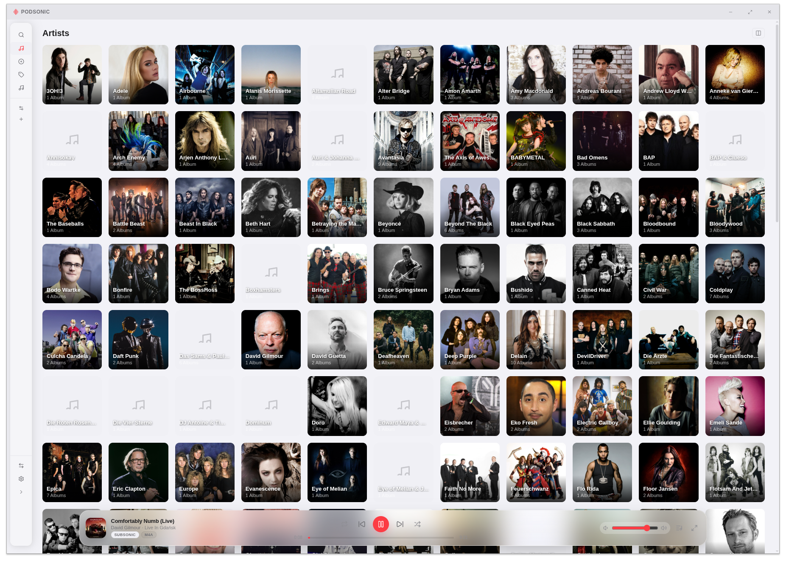

Der Musikmanager,
den deine Bibliothek verdient.
Podsonic ist ein Desktop-Musikmanager für Windows, macOS und Linux — eine moderne iTunes-Alternative mit Subsonic-Server-Integration, lokaler Bibliotheksverwaltung und Gerätesynchronisation.
Alles, was iTunes hätte sein sollen.
Musiksammlung verwalten, mit Subsonic-Servern synchronisieren, Geräte aktuell halten und Musik mit Fokus genießen — alles in einer App.
Musikbibliothek
Leistungsstarke lokale Bibliothek mit Sofortsuche, nicht-destruktiver Tag-Bearbeitung und automatischer Metadaten-Anreicherung aus Online-Quellen.
- ID3-Tags nicht-destruktiv bearbeiten (Overlay-Modell)
- Cover Art von TheAudioDB & Last.fm
- Sofortsuche via SQLite FTS5 — auch bei Zehntausenden Tracks
- FLAC, MP3, AAC und weitere Formate
- Künstler- & Album-Infos von TheAudioDB
Subsonic-Sync
Verbindung zu jedem Subsonic-kompatiblen Server und selektiver Sync in die lokale Bibliothek.
- Navidrome, Airsonic, Gonic und alle Subsonic-Server
- Selektiver Sync: Künstler, Alben oder Playlists wählen
- Live-Fortschritt mit Echtzeit-WebSocket-Updates
- Netzwerksicher: atomares Schreiben schützt NAS-Mounts
- Hintergrund-Sync — App bleibt während des Downloads nutzbar
Gerätesynchronisation
Bibliothek auf portable Geräte, externe Laufwerke und iPods übertragen.
- Sync auf lokale Ordner und gemountete Laufwerke
- iPod Classic-Unterstützung (Kompatibilität s. u.)
- Cover Art direkt auf den iPod übertragen
- FAT32-kompatibel auf Windows, macOS und Linux
Wiedergabe
Fokussiertes Hörerlebnis — vom Vollbild-Player bis zu synchronisierten Liedtexten.
- Vollbild-Player mit Album Art
- Queue-Verwaltung — umordnen, mischen, als Playlist speichern
- Synchronisierte Liedtexte via LRCLib
- Wiedergabe aus jeder Bibliotheksansicht

Ernsthafter iPod-Support.
Podsonic kann die Musikbibliothek direkt auf einen iPod Classic synchronisieren — im nativen iTunes-Datenbankformat.
Apple-Geräte werden als Sync-Ziel für typische Anwendungsfälle unterstützt.
Die folgende Tabelle zeigt den aktuellen Teststatus für iPod-Modelle.
Hinweis: iTunes erkennt, wenn die Datenbank von einem anderen Programm beschrieben wurde, und fragt möglicherweise nach einer Neusynchronisierung — das ist eine bekannte Einschränkung.
| Gerät | Status | Hinweis |
|---|---|---|
| iPod Classic 6. Gen | Getestet | Vollständig getestet und funktionsfähig |
| iPod Classic 5. Gen | Wahrscheinlich | Gleiches Format, nicht getestet |
| iPod Classic 7. Gen | Wahrscheinlich | Gleiches Format, nicht getestet |
| iPod Classic (andere Generationen) | Ungetestet | Kompatibilität unbekannt |
| iPod Nano (alle Generationen) | Wahrscheinlich nicht | Andere Firmware / anderes Protokoll |
| iPod Shuffle (alle Generationen) | Wahrscheinlich nicht | Andere Firmware / anderes Protokoll |
| iPod Touch (alle Generationen) | Wahrscheinlich nicht | iOS-basiert, anderes Protokoll |
Podsonic herunterladen
Verfügbar für Windows, macOS und Linux. Kostenlos.
Alle Releases auf GitHub Releases
Podsonic gefällt dir?
Podsonic ist kostenlos und Open Source. Wenn es dich von iTunes befreit, freue ich mich über einen Kaffee.
Auf Ko-fi unterstützen